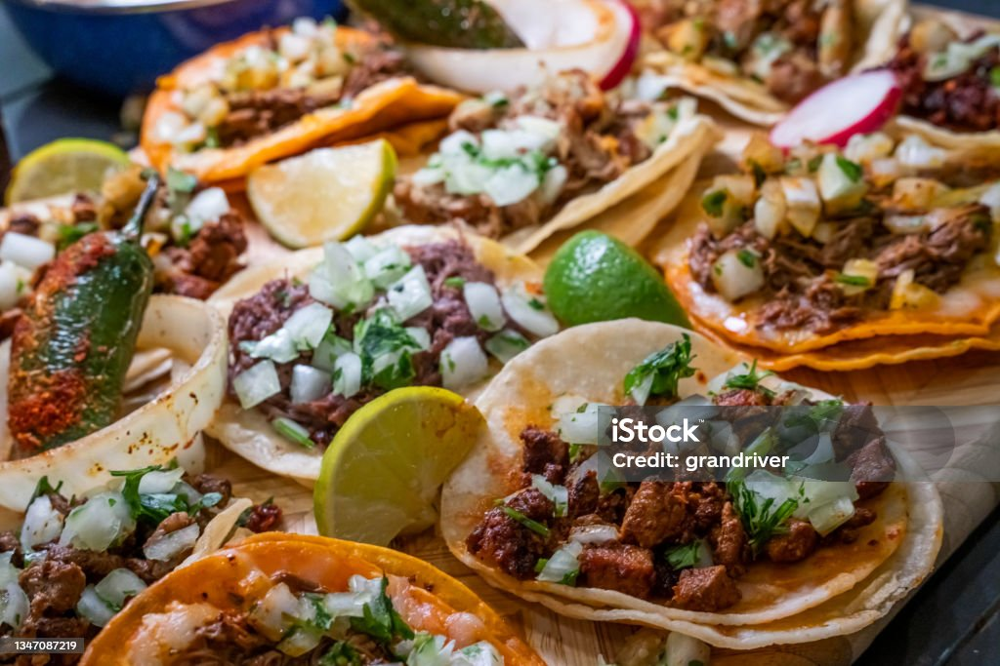

Birria Taco (Beef)

Descripton
Mexican birria tacos, Jalisco-style, made with braised beef that's slow-cooked in a fragrant 3-chile sauce with a
delicious spice mix. Crispy tacos, and tender, mouth-watering beef team up with melted Mexican cheese in this
impressive meal.
These restaurant-worthy birria tacos are crispy on the outside, yet incredibly tender and juicy on the inside?
What's not to love about this top-rated tacos de birria recipe?
Ingredients
- Dried chile peppers
- Beef
- Seasonings
- Onions and cilantro
- Tomatoes
- Olive Oil
- Vinegar
- Tortillas
Steps
- Boil the dried peppers for 5 minutes, then remove from heat and let the peppers soak until the water is
cool. Drain, reserving some water.
- Season the beef and sear on all sides in oil in a Dutch oven.
- Grill the tomatoes until the skin is blistered and begins to peel.
- Blend the soaked chili peppers with the reserved chile water, tomatoes, vinegar, and seasonings.
- Strain the sauce and pour over the meat. Cover the Dutch oven and cook until the meat begins to fall apart,
basting often. Allow the meat to rest, then shred.
- Warm the tortillas on the griddle. Fill each tortilla with meat, onions, and cilantro.
Back